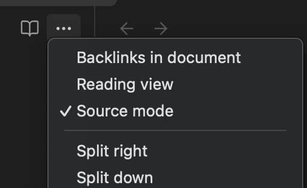
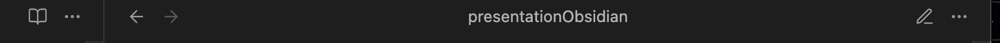
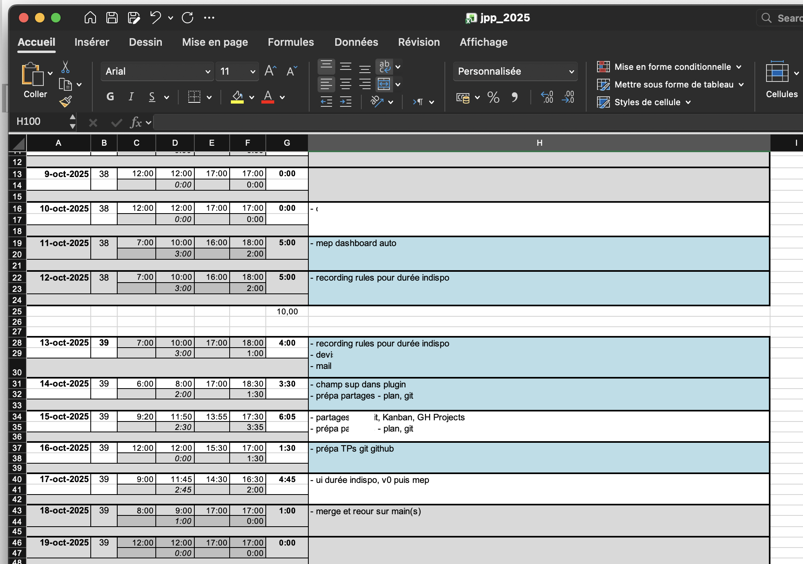
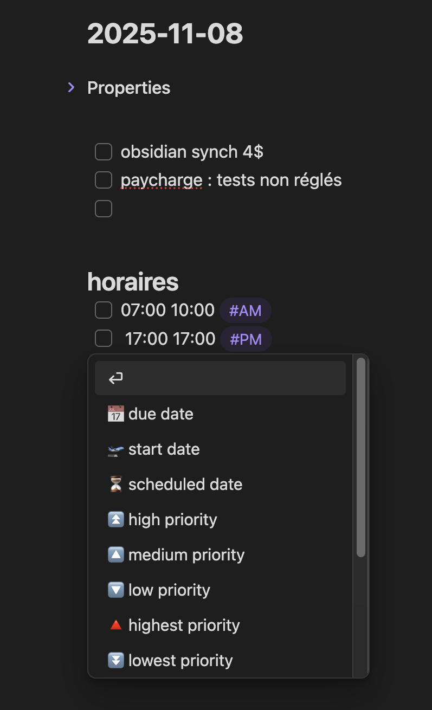
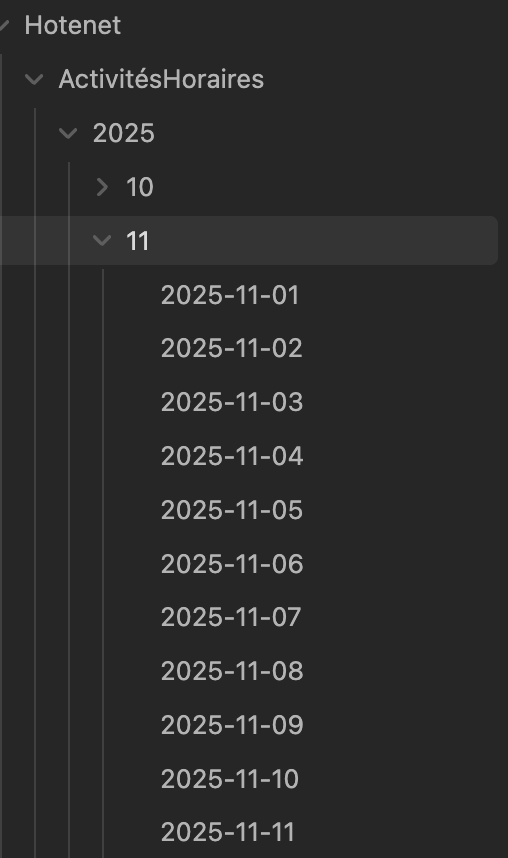
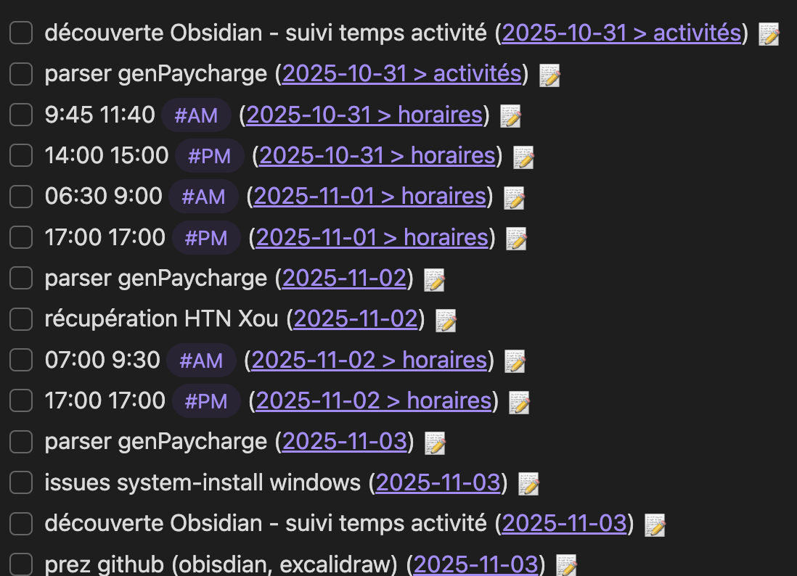
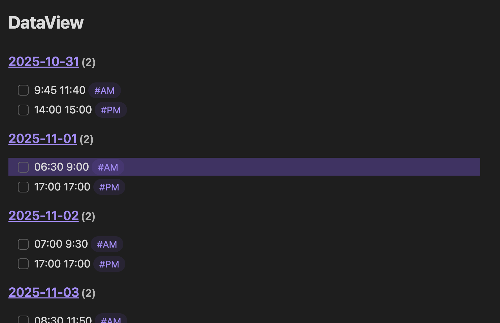
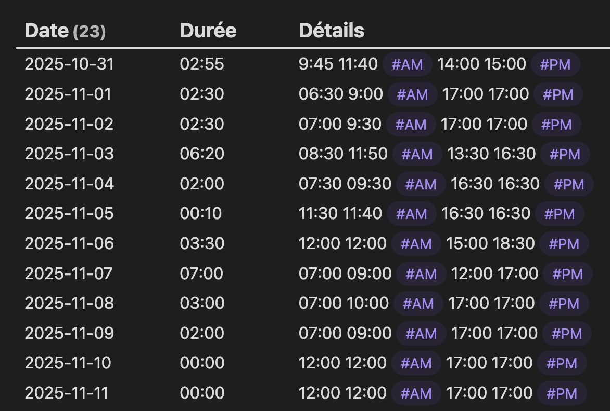
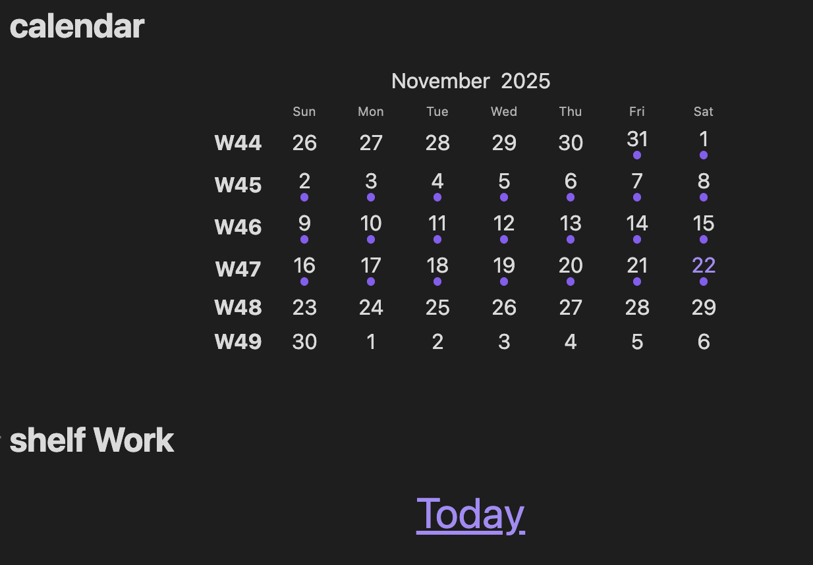
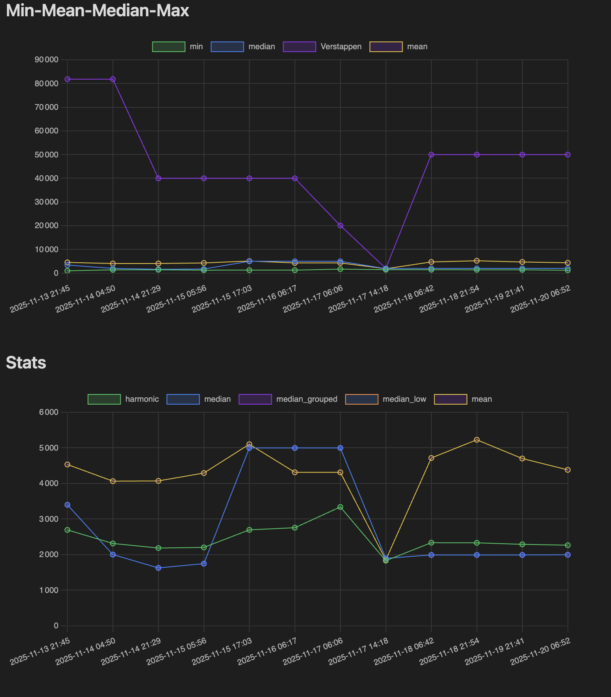

<!DOCTYPE html>
<html lang="en">
  <head>
    <meta charset="utf-8" />
    <meta name="viewport" content="width=device-width, initial-scale=1.0, maximum-scale=1.0, user-scalable=no" />

    <title></title>
    <link rel="stylesheet" href="dist/reveal.css" />
    <link rel="stylesheet" href="dist/theme/black.css" id="theme" />
    <link rel="stylesheet" href="plugin/highlight/zenburn.css" />
	<link rel="stylesheet" href="css/layout.css" />
	<link rel="stylesheet" href="plugin/customcontrols/style.css">


    <script defer src="dist/fontawesome/all.min.js"></script>

	<script type="text/javascript">
		var forgetPop = true;
		function onPopState(event) {
			if(forgetPop){
				forgetPop = false;
			} else {
				parent.postMessage(event.target.location.href, "app://obsidian.md");
			}
        }
		window.onpopstate = onPopState;
		window.onmessage = event => {
			if(event.data == "reload"){
				window.document.location.reload();
			}
			forgetPop = true;
		}

		function fitElements(){
			const itemsToFit = document.getElementsByClassName('fitText');
			for (const item in itemsToFit) {
				if (Object.hasOwnProperty.call(itemsToFit, item)) {
					var element = itemsToFit[item];
					fitElement(element,1, 1000);
					element.classList.remove('fitText');
				}
			}
		}

		function fitElement(element, start, end){

			let size = (end + start) / 2;
			element.style.fontSize = `${size}px`;

			if(Math.abs(start - end) < 1){
				while(element.scrollHeight > element.offsetHeight){
					size--;
					element.style.fontSize = `${size}px`;
				}
				return;
			}

			if(element.scrollHeight > element.offsetHeight){
				fitElement(element, start, size);
			} else {
				fitElement(element, size, end);
			}		
		}


		document.onreadystatechange = () => {
			fitElements();
			if (document.readyState === 'complete') {
				if (window.location.href.indexOf("?export") != -1){
					parent.postMessage(event.target.location.href, "app://obsidian.md");
				}
				if (window.location.href.indexOf("print-pdf") != -1){
					let stateCheck = setInterval(() => {
						clearInterval(stateCheck);
						window.print();
					}, 250);
				}
			}
	};


        </script>
  </head>
  <body>
    <div class="reveal">
      <div class="slides"><section  data-markdown><script type="text/template"><!-- .slide: class="drop" -->
<div class="" style="position: absolute; left: 0px; top: 0px; height: 800px; width: 1000px; min-height: 800px; display: flex; flex-direction: column; align-items: center; justify-content: center" absolute="true">

<style>
	.blue-back {
		color: red;
		 background-color: blue;
	}
	.with-border {
		border: 1px solid red;
	}
	.md-typeset pre > code {
	    max-height: 15rem;
     }
</style>


#### Un caillou dans une galaxie 

</div></script></section><section  data-markdown><script type="text/template"><!-- .slide: class="drop" -->
<div class="" style="position: absolute; left: 0px; top: 0px; height: 800px; width: 1000px; min-height: 800px; display: flex; flex-direction: column; align-items: center; justify-content: center" absolute="true">

<div class="" style="position: absolute; left: 5%; top: 0%; height: 30%; width: 90%; display: flex; flex-direction: column; align-items: center; justify-content: center" >

# introduction

[landing](https://obsidian.md)
et c'est le <span class="blue-back">drame !</span>

</div>

<div class="" style="position: absolute; left: 5%; top: 30%; height: 55%; width: 50%; display: flex; flex-direction: column; align-items: center; justify-content: center" >

<split even gap="0" no-margin wrap="3" align="justify">


</split>
</div>

<div class="" style="position: absolute; left: 50%; top: 30%; height: 55%; width: 45%; display: flex; flex-direction: column; align-items: center; justify-content: center" >


</div>

<div class="" style="position: absolute; left: 5%; top: 85%; height: 15%; width: 90%; display: flex; flex-direction: column; align-items: center; justify-content: center" >


</div>
</div>

<aside class="notes"><p>pour moi</p>
</aside></script></section><section  data-markdown><script type="text/template"><!-- .slide: class="drop" -->
<div class="" style="position: absolute; left: 0px; top: 0px; height: 800px; width: 1000px; min-height: 800px; display: flex; flex-direction: column; align-items: center; justify-content: center" absolute="true">


# <span class="blue-back">++ </span> 

basiquement pas wysiwyg

# ET...
</div></script></section><section  data-markdown><script type="text/template"><!-- .slide: class="drop" -->
<div class="" style="position: absolute; left: 0px; top: 0px; height: 800px; width: 1000px; min-height: 800px; display: flex; flex-direction: column; align-items: center; justify-content: center" absolute="true">

# plugins

14 novembre 2025 : <span style="color:red;">2676</span> !

A vot' bon coeur, y en a pour tous les goûts !
</div></script></section><section  data-markdown><script type="text/template"><!-- .slide: class="drop" -->
<div class="" style="position: absolute; left: 0px; top: 0px; height: 800px; width: 1000px; min-height: 800px; display: flex; flex-direction: column; align-items: center; justify-content: center" absolute="true">

<div class="" style="position: absolute; left: 5%; top: 0%; height: 10%; width: 90%; display: flex; flex-direction: column; align-items: center; justify-content: center" >

# MD editor
</div>

<div class="" style="position: absolute; left: 5%; top: 13%; height: 85%; width: 90%; display: flex; flex-direction: column; align-items: flex-start; justify-content: space-evenly" align="left">

- hybrid MD mode : deux modes d'édition (le livre) selon "source mode" ou non
	- source mode : sous `...`, toggle plus ou moins de détails




- reading view : le crayon. affichage lisible 





- preview : split right et ensuite "crayon" (command-click sur le livre)
</div>
</div></script></section><section  data-markdown><script type="text/template"><!-- .slide: class="drop" -->
<div class="" style="position: absolute; left: 0px; top: 0px; height: 800px; width: 1000px; min-height: 800px; display: flex; flex-direction: column; align-items: center; justify-content: center" absolute="true">

# Et mes données ?

- du texte (markdown, js, autres)
	- lisible
	- automatisations
- sur ta machine !
	- sauvegardes
	- git
- modèle commercial
	- vend la synchro multi-devices (4$/mois)
	- vend l'exposition internet (8$/mois)
</div></script></section><section  data-markdown><script type="text/template"><!-- .slide: class="drop" -->
<div class="" style="position: absolute; left: 0px; top: 0px; height: 800px; width: 1000px; min-height: 800px; display: flex; flex-direction: column; align-items: center; justify-content: center" absolute="true">

<div class="" style="position: absolute; left: 5%; top: 0%; height: 10%; width: 95%; display: flex; flex-direction: column; align-items: center; justify-content: center" >

# Bien commencer ?
</div>

<div class="" style="position: absolute; left: 5%; top: 18%; height: 15%; width: 90%; display: flex; flex-direction: column; align-items: center; justify-content: center" align="center">

avec un fil rouge<!-- .element: style="color: red" -->
</div>

<div class="" style="position: absolute; left: 5%; top: 22%; height: 70%; width: 90%; display: flex; flex-direction: column; align-items: flex-start; justify-content: space-evenly" align="left">

- feuille de temps et activités
- présentations
- dessins
- charts
</div>

<div class="" style="position: absolute; left: 5%; top: 85%; height: 15%; width: 90%; display: flex; flex-direction: column; align-items: center; justify-content: center" >

trouver les bons plugins <!-- .element: style="background: blue" -->
</div>
</div></script></section><section  data-markdown><script type="text/template"><!-- .slide: class="drop" -->
<div class="" style="position: absolute; left: 0px; top: 0px; height: 800px; width: 1000px; min-height: 800px; display: flex; flex-direction: column; align-items: center; justify-content: center" absolute="true">

# Feuille de temps et activités


</div></script></section><section  data-markdown><script type="text/template"><!-- .slide: class="drop" -->
<div class="" style="position: absolute; left: 0px; top: 0px; height: 800px; width: 1000px; min-height: 800px; display: flex; flex-direction: column; align-items: center; justify-content: center" absolute="true">

# Feuille de temps et activités

- [tasks](https://github.com/obsidian-tasks-group/obsidian-tasks) : base pour les activités


- [dataview](https://github.com/blacksmithgu/obsidian-dataview) : vault as a database via API, JavaScript

- [journal](https://github.com/srg-kostyrko/obsidian-journal) : organiser ses notes
</div></script></section><section  data-markdown><script type="text/template"><!-- .slide: class="drop" -->
<div class="" style="position: absolute; left: 0px; top: 0px; height: 800px; width: 1000px; min-height: 800px; display: flex; flex-direction: column; align-items: center; justify-content: center" absolute="true">

<div class="" style="position: absolute; left: 5%; top: 0%; height: 10%; width: 95%; display: flex; flex-direction: column; align-items: center; justify-content: center" >

# tasks (plugin)
</div>

<div class="" style="position: absolute; left: 5%; top: 15%; height: 90%; width: 45%; display: flex; flex-direction: column; align-items: flex-start; justify-content: space-evenly" align="left">



</div>

<div class="" style="position: absolute; left: 55%; top: 15%; height: 90%; width: 45%; display: flex; flex-direction: column; align-items: flex-start; justify-content: space-evenly" align="left">



</div>
</div></script></section><section  data-markdown><script type="text/template"><!-- .slide: class="drop" -->
<div class="" style="position: absolute; left: 0px; top: 0px; height: 800px; width: 1000px; min-height: 800px; display: flex; flex-direction: column; align-items: center; justify-content: center" absolute="true">

<div class="" style="position: absolute; left: 5%; top: 0%; height: 10%; width: 95%; display: flex; flex-direction: column; align-items: center; justify-content: center" >

# tasks (plugin)
</div>

<div class="" style="position: absolute; left: 5%; top: 15%; height: 10%; width: 95%; display: flex; flex-direction: column; align-items: flex-start; justify-content: space-evenly" align="left">

- commencer petit
</div>

<div class="" style="position: absolute; left: 5%; top: 28%; height: 70%; width: 95%; display: flex; flex-direction: column; align-items: center; justify-content: center" >

````markdown
   ```tasks

   ```
````



</div>
</div></script></section><section  data-markdown><script type="text/template"><!-- .slide: class="drop" -->
<div class="" style="position: absolute; left: 0px; top: 0px; height: 800px; width: 1000px; min-height: 800px; display: flex; flex-direction: column; align-items: center; justify-content: center" absolute="true">

<div class="" style="position: absolute; left: 5%; top: 0%; height: 10%; width: 95%; display: flex; flex-direction: column; align-items: center; justify-content: center" >

# tasks (plugin)
</div>

<div class="" style="position: absolute; left: 5%; top: 15%; height: 10%; width: 95%; display: flex; flex-direction: column; align-items: flex-start; justify-content: space-evenly" align="left">

- filtrage
 </div>

<div class="" style="position: absolute; left: 0%; top: 28%; height: 80%; width: 70%; display: flex; flex-direction: column; align-items: center; justify-content: center" >

````markdown
```tasks
(tags includes AM) OR (tags includes PM)
short mode
hide edit button
hide backlink
```
````
</div>
<div class="" style="position: absolute; left: 70%; top: 28%; height: 80%; width: 30%; display: flex; flex-direction: column; align-items: center; justify-content: center" >


</div>
</div></script></section><section  data-markdown><script type="text/template"><!-- .slide: class="drop" -->
<div class="" style="position: absolute; left: 0px; top: 0px; height: 800px; width: 1000px; min-height: 800px; display: flex; flex-direction: column; align-items: center; justify-content: center" absolute="true">

<div class="" style="position: absolute; left: 5%; top: 0%; height: 10%; width: 95%; display: flex; flex-direction: column; align-items: center; justify-content: center" >

# dataview (plugin)
</div>

<div class="" style="position: absolute; left: 5%; top: 15%; height: 10%; width: 95%; display: flex; flex-direction: column; align-items: flex-start; justify-content: space-evenly" align="left">

- on prépare la suite
</div>

<div class="" style="position: absolute; left: 5%; top: 28%; height: 80%; width: 95%; display: flex; flex-direction: column; align-items: center; justify-content: center" >


````markdown
```dataview
TASK
WHERE contains(tags, "#AM") OR contains(tags, "#PM")
GROUP BY file.link
```
````



</div>
</div></script></section><section  data-markdown><script type="text/template"><!-- .slide: class="drop" -->
<div class="" style="position: absolute; left: 0px; top: 0px; height: 800px; width: 1000px; min-height: 800px; display: flex; flex-direction: column; align-items: center; justify-content: center" absolute="true">

<div class="" style="position: absolute; left: 5%; top: 0%; height: 10%; width: 95%; display: flex; flex-direction: column; align-items: center; justify-content: center" >

# dataviewJs
</div>

<div class="" style="position: absolute; left: 5%; top: 15%; height: 10%; width: 95%; display: flex; flex-direction: column; align-items: flex-start; justify-content: space-evenly" align="left">

- Enfin !
</div>

<div class="" style="font-size: 20px; position: absolute; left: 0%; top: 25%; height: 90%; width: 100%; display: flex; flex-direction: column; align-items: center; justify-content: center" align="center">


````markdown
```dataviewjs
function minutes(str) {
  let items = str.split(" ");
  let startItems = items[0].split(":"),
      endItems = items[1].split(":");
  let result = +endItems[0] * 60 + +endItems[1] - (+startItems[0] * 60 + +startItems[1])
  return result
};
function hm(minutes) {
  return String(Math.floor(minutes / 60)).padStart(2, "0") + ":" + String(minutes % 60).padStart(2, "0")
};

let tasks = dv.pages()
  .where(p => p.file && p.file.path && !p.file.path.includes("templates/"))
  .file.tasks.filter(t => ['#AM', '#PM'].some(tag => t.tags.includes(tag)));

let tableData = [];
for (let group of tasks.groupBy(t => t.path)) {
  let pathItems = group.key.split("/")
  let date = pathItems[pathItems.length - 1].split(".")[0]
  let dailies = group.rows
  let am = dailies[0]
  let pm = dailies[1]
  let totalMinutes = minutes(am.text) + minutes(pm.text)
  let duration = hm(totalMinutes)
  let details = am.text + " " + pm.text
  tableData.push([date, duration, details])
}

dv.table(["Date", "Durée", "Détails"], tableData)
```
````
</div>
</div></script></section><section  data-markdown><script type="text/template"><!-- .slide: class="drop" -->
<div class="" style="position: absolute; left: 0px; top: 0px; height: 800px; width: 1000px; min-height: 800px; display: flex; flex-direction: column; align-items: center; justify-content: center" absolute="true">

# dataviewJs


</div></script></section><section  data-markdown><script type="text/template"><!-- .slide: class="drop" -->
<div class="" style="position: absolute; left: 0px; top: 0px; height: 800px; width: 1000px; min-height: 800px; display: flex; flex-direction: column; align-items: center; justify-content: center" absolute="true">

<div class="" style="position: absolute; left: 5%; top: 0%; height: 10%; width: 95%; display: flex; flex-direction: column; align-items: center; justify-content: center" >

# journal (plugin)
</div>

<div class="" style="font-size: 32px; position: absolute; left: 5%; top: 10%; height: 80%; width: 35%; display: flex; flex-direction: column; align-items: center; justify-content: center" >

````markdown

# calendar
```calendar-timeline
mode: month
```

# shelf Work
```journals-home
show:
  - day
scale: 2
separator: " | "
shelf: Work
```
````
</div>

<div class="" style="position: absolute; left: 40%; top: 10%; height: 80%; width: 55%; display: flex; flex-direction: column; align-items: center; justify-content: center" >



</div>
</div></script></section><section  data-markdown><script type="text/template"><!-- .slide: class="drop" -->
<div class="" style="position: absolute; left: 0px; top: 0px; height: 800px; width: 1000px; min-height: 800px; display: flex; flex-direction: column; align-items: center; justify-content: center" absolute="true">

# Présentations

C'est pas powerpoint ou prezi


</div></script></section><section  data-markdown><script type="text/template"><!-- .slide: class="drop" -->
<div class="" style="position: absolute; left: 0px; top: 0px; height: 800px; width: 1000px; min-height: 800px; display: flex; flex-direction: column; align-items: center; justify-content: center" absolute="true">

# Advanced slides

- pas wysiwyg
	- layouts
	- css
- export HTML (dans preview)
	- github pages
- efforts sur un template ?

- [advanced slides](https://github.com/MSzturc/obsidian-advanced-slides)
</div></script></section><section  data-markdown><script type="text/template"><!-- .slide: class="drop" -->
<div class="" style="position: absolute; left: 0px; top: 0px; height: 800px; width: 1000px; min-height: 800px; display: flex; flex-direction: column; align-items: center; justify-content: center" absolute="true">

# Annoter des copies d'écran

- re-tester IA
- et sans doute beaucoup d'autres choses
</div></script></section><section  data-markdown><script type="text/template"><!-- .slide: class="drop" -->
<div class="" style="position: absolute; left: 0px; top: 0px; height: 800px; width: 1000px; min-height: 800px; display: flex; flex-direction: column; align-items: center; justify-content: center" absolute="true">

# excalidraw


- [excalidraw](https://github.com/zsviczian/obsidian-excalidraw-plugin)
</div></script></section><section  data-markdown><script type="text/template"><!-- .slide: class="drop" -->
<div class="" style="position: absolute; left: 0px; top: 0px; height: 800px; width: 1000px; min-height: 800px; display: flex; flex-direction: column; align-items: center; justify-content: center" absolute="true">

# des séries


</div></script></section><section  data-markdown><script type="text/template"><!-- .slide: class="drop" -->
<div class="" style="position: absolute; left: 0px; top: 0px; height: 800px; width: 1000px; min-height: 800px; display: flex; flex-direction: column; align-items: center; justify-content: center" absolute="true">

# charts (plugin)

- pas très riche en type de charts
- rapide et unifié
- éditable et écrivable
	- mode texte comme le reste
- [charts](https://github.com/phibr0/obsidian-charts)
</div></script></section><section  data-markdown><script type="text/template"><!-- .slide: class="drop" -->
<div class="" style="position: absolute; left: 0px; top: 0px; height: 800px; width: 1000px; min-height: 800px; display: flex; flex-direction: column; align-items: center; justify-content: center" absolute="true">

# git (plugin)

- ToDo

- [just do git!](https://github.com/Vinzent03/obsidian-git)
</div></script></section><section  data-markdown><script type="text/template"><!-- .slide: class="drop" -->
<div class="" style="position: absolute; left: 0px; top: 0px; height: 800px; width: 1000px; min-height: 800px; display: flex; flex-direction: column; align-items: center; justify-content: center" absolute="true">

# Combien ?

- [synch](https://obsidian.md/sync) : **48$ / an / personne**, un vault
	- synch mutli-devices
	- peut se faire en perso (git, nextCloud, ...)
- [publish](https://obsidian.md/publish) : **96$ / an / personne**
	- publication de site statique
	- collaboration sur un vault
	- mot de passe
- pas de licence commerciale
</div></script></section></div>
    </div>

    <script src="dist/reveal.js"></script>

    <script src="plugin/markdown/markdown.js"></script>
    <script src="plugin/highlight/highlight.js"></script>
    <script src="plugin/zoom/zoom.js"></script>
    <script src="plugin/notes/notes.js"></script>
    <script src="plugin/math/math.js"></script>
	<script src="plugin/mermaid/mermaid.js"></script>
	<script src="plugin/chart/chart.min.js"></script>
	<script src="plugin/chart/plugin.js"></script>
	<script src="plugin/customcontrols/plugin.js"></script>

    <script>
      function extend() {
        var target = {};
        for (var i = 0; i < arguments.length; i++) {
          var source = arguments[i];
          for (var key in source) {
            if (source.hasOwnProperty(key)) {
              target[key] = source[key];
            }
          }
        }
        return target;
      }

	  function isLight(color) {
		let hex = color.replace('#', '');

		// convert #fff => #ffffff
		if(hex.length == 3){
			hex = `${hex[0]}${hex[0]}${hex[1]}${hex[1]}${hex[2]}${hex[2]}`;
		}

		const c_r = parseInt(hex.substr(0, 2), 16);
		const c_g = parseInt(hex.substr(2, 2), 16);
		const c_b = parseInt(hex.substr(4, 2), 16);
		const brightness = ((c_r * 299) + (c_g * 587) + (c_b * 114)) / 1000;
		return brightness > 155;
	}

	var bgColor = getComputedStyle(document.documentElement).getPropertyValue('--r-background-color').trim();
	var isLight = isLight(bgColor);

	if(isLight){
		document.body.classList.add('has-light-background');
	} else {
		document.body.classList.add('has-dark-background');
	}

      // default options to init reveal.js
      var defaultOptions = {
        controls: true,
        progress: true,
        history: true,
        center: true,
        transition: 'default', // none/fade/slide/convex/concave/zoom
        plugins: [
          RevealMarkdown,
          RevealHighlight,
          RevealZoom,
          RevealNotes,
          RevealMath.MathJax3,
		  RevealMermaid,
		  RevealChart,
		  RevealCustomControls,
        ],


    	allottedTime: 120 * 1000,

		mathjax3: {
			mathjax: 'plugin/math/mathjax/tex-mml-chtml.js',
		},
		markdown: {
		  gfm: true,
		  mangle: true,
		  pedantic: false,
		  smartLists: false,
		  smartypants: false,
		},

		mermaid: {
			theme: isLight ? 'default' : 'dark',
		},

		customcontrols: {
			controls: [
			]
		},
      };

      // options from URL query string
      var queryOptions = Reveal().getQueryHash() || {};

      var options = extend(defaultOptions, {"width":1000,"height":800,"margin":0.04,"controls":true,"progress":true,"slideNumber":true,"transition":"slide","transitionSpeed":"default"}, queryOptions);
    </script>

    <script>
      Reveal.initialize(options);
    </script>
  </body>

  <!-- created with Advanced Slides -->
</html>
